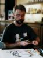
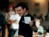
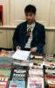
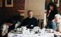
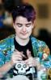
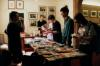
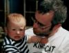
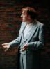
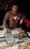
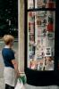

The Death of CAPTION
Pictures taken from Matt Brooker's photo album. Click on the small images to see larger versions.
Though the theme was 'The Death of CAPTION', it turned out quite the reverse -- we'd been a bit worried about the likely attendance at CAPTION this year, feeling that we'd done less publicity than perhaps we ought to have, but in fact attendance was very healthy. In fact, THE DEATH OF CAPTION was just the theme for this year, providing a useful focus for panels, workshops, and so on. However, as usual, the main emphasis was on chatting, making new contacts, and revisiting old friends -- and CAPTION does this fine.
The weekend started on Friday evening, when various people arrived in town ready to start bright and early the next day. Early arrivals included Sean Bieri & Sophia Raptis over from the US, Sina, Howard Stangroom (Sina does a cool little zine called Atomic Love, Howard sells interesting camp & alternative comics under the name Capricorn Comics), Lee Brimmicombe-Wood and his wife Motoko, Gavin Burrows (who's currently using Lottery grant money to put together a comic called Stars & Gutters), and Matt Brooker (otherwise known as D'Emon D'Raughtsman D'Israeli). All us CAPTION organizers and gophers were there, of course, having come from the Union where we did the set-up (table moving, poster-sticking, etc).
Having tried the various 'murky ales' (to pinch the phrase of one attendee) -- if you like bitter, the pub we were at is a very good bet, carrying all sorts of interesting summer ales -- we rolled off to our respective homes/lodgings. I had Sina and Howard in tow for the night.
Bright and early next day (well, 9:30 ish), Howard, Sina, and I set off for the centre of town, heading for the beautiful Oxford Union Society building that has hosted CAPTION since 1992. (Hey, I'm getting into this press release type stuff!) A bastion of élitism and privilege, adorned with group photos of prime ministers, MPs, foreign dignitaries, and even 'Mr Malcolm X'. Seems like a very suitable place to hold a small press comics convention, with scraggy attendees, an eclectic exhibition, and the odd bit of obscene reading material.
First event of the day is simply to mooch around, getting a coffee or possibly an early-morning drink. For the committee members, it is also de rigeur to worry who will turn up, who will fail to turn up, how many memberships on the day we'll take, and how many panel members will not turn up in time. In the event, it turned out nice again -- we only had about 5 badges left over (out of the named ones that we prepared earlier), and the people who failed to turn up were generally not the crucial ones. (We did miss you tho!) And we took over 40 memberships on the day (out of a total attendance of just over 100).
The first panel wasn't until 1 pm -- some panellists arriving just at the last moment, but no harm done. The title of this panel was 'Everything we've ever loved is dead!'. Chaired by Andy Roberts, it featured Nick Abadzis, Paul Gravett, Jean-Paul Jennequin, and Lee Brimmicombe-Wood discussing good dead comics such as Deadline, life after comics (Lee now being in the computer games industry and Nick in illustrating children's books), and the overall decline of the comics industry. We came to the conclusion that cheap comics of 100 pages or so, printed on basic-quality paper, coming out on a very regular basis and with self-contained stories (Paul was telling us about the Italian market), is the way forward to bring in new readers. Now who'll pick up the baton?! (All the panels were recorded by Andy Konky Kru -- I expect he can provide copies for people if they're interested.)
The second programmed event of the day was the workshop run every year by Steve Whitaker. These are quite inspirational and produce some lovely results too. I didn't attend (just popped my head round the door five minutes before the end) but was staggered by the number of people attending (in previous years people had at least enough desk space to work on, while this year it seemed that there were people flowing over to the seats round the side too). I'm not quite sure what the theme of the workshop was exactly, but it seemed to be something about light & shade, white paint on black paper. It was surprising how hard it was to tell exactly who'd done what picture: the brushstrokes were very bold & flowing & blocky, but oddly similar. And as usual the workshop went down well with the punters too.
There was just enough time after this to get a drink from the bar and adjourn to the third programme item, another panel. This was entitled 'Good comics go to heaven', and talking about successful comics were Jeremy Dennis (chairing), Andi Watson, Gary Spenser Millidge, John Welding (who does a lovely comic called Goathland) and Sean Bieri. Really this ended up being 'how to plug away at your independent publication and is it worth it' -- an unexceptional topic, but worth reiterating every so often and overall pretty well done. What was striking was how modest the aims of the panellists were, overall: basically to make a living rather than to set the world ablaze. Not that there's anything wrong with that, I hasten to add -- but even when asked what their wildest dreams would be, the answer hardly changed.
Once the panel was over, it was time for the annual auction (held to benefit the Cartoon Art Trust's educational activities -- we used to give the money to the London Cartoon Centre when this was still going as a separate unit). Traditionally this is a fairly high-volume, low individual price auction -- sometimes rather disturbingly so, when you can see beautiful pieces go for very low amounts. The base price tends to be around 5 pounds, and the highest price of the evening was (I think) D'Israeli's colour piece, which went for 75 or 80 pounds. (On the whole I'm in favour of this very reasonable pricing, giving everyone a chance to join in. It can be a bit disconcerting if you're not aware of the low level of pricing though!) It's also a bit idiosyncratic: CAPTION has its own favourites whose artwork goes for more than it probably would in other situations.
Although the number of pieces auctioned this year was not huge, we made a respectable amount: about 500 pounds. Some of our usual high bidders were absent this year (come back Guy Lawley!) but all the pieces were of a very high quality and got a decent amount of attention.
After the auction we usually have to rush to the evening meal (not the usual pizza this time -- we had to move to a local curry house when the pizza place we've gone to for the past seven years said that it was not taking bookings, no sirree, and especially not from parties of over 15 -- we wanted to book for 40). As the auction was rather quicker than usual, we actually managed to arrive a bit early; but this didn't seem to help the curry house, which managed to mishandle one of our tables to the extent that Jeremy was served food she couldn't eat. It looks like we shan't be returning next year.
Our table seemed to do ok though. I was at the table with lots of continental visitors (including Reinder Dijkhuis, Peter van Laarhoven, Ria Schulpen) and was surprised to find that curry is much rarer on the continent than over here -- advice on choosing meals followed.
Finishing up (and managing to avoid being stuck with the last bits of bill that the unhappy table had refused to pay), it was back to the Union building for the evening performance of the Crow (based more on the film than on the comic book, this was the Crow as Neighbours & Rolf Harris -- very funny). And then more drinking until chucking-out time, and back home with a load of people to stay on my floor: this time it was Pete Pavement, Sina again, Sam Learmonth (he has some really good pages in Superstate Funnies, but otherwise does few comics), and Reinder Dijkhuis.
Sunday morning was rather harder to get up for, what with reading, chatting, and drinking tea into the night on Sat. Also, the day wasn't due to start until 11 am anyway, so there was no big hurry. Nevertheless, we got there just before 11, only to find the door locked and an increasing crowd of CAPTION people behind us. Ah, what it is for people to be eager -- even though this was due to be an even lighter day events-wise, with only one discussion panel and the main agenda item being sunbathing with one's friends.
I was chairing the Sunday panel (entitled 'Beyond Death: where next for the comics alternative?'). The panel gradually moved towards its beginning at 1 o'clock-ish: two of the people supposed to be on it had not turned up (Kev Sutherland, who is organizing a big comics festival in Bristol; and Rich Johnston, who always has lots of enthusiasm for promotion and networking). The final line-up was pretty talkative, though, with Pete Ashton (distributor and convention runner), Peter van Laarhoven, and Andy Konky Kru. We ranged over all sorts of ideas for revitalizing comics events, from detourning art events by calling your comics exhibition something like 'art with words', to organizing big festivals where the public get in free or pretty much for free (a sine qua non if you want to really pack in the ordinary punters), to local pub evenings as are already dotted around the UK. (In Oxford we meet every Tuesday night down the pub, and this forms the core of the CAPTION committee and gophers.)
And then, winding down -- there was more drinking time, a bit more buying time, and plenty more sitting out in the garden time. By that point, the committee knew that we'd done ok this year as well, and could breathe a collective sigh of relief. It wasn't over -- there was still pizza to be had round at Jeremy, Damian, and Colin's place, and I had Sean & Sophia, Peter v L and his wife Inge staying on Sunday night (& Sean & Sophia for Monday night too), but in comparision the rest was chill-out time.
Some highlights? It was great to see Paul Schroeder (Mooncat) again, not having seen him for a long time -- and with his kid in tow! A beautiful child, into absolutely everything -- wait until he grows up. And quite a CAPTION kid, having been born about the time of CAPTION97. It was also a bit startling to find my self talking blithely about CAPTIONs 99, 00 and even 2001 during the weekend -- when we first started doing these events, we religiously said 'never again!' until, ooh, at least 3 months after. I think the rot set in when during CAPTION96 we actually said 'yeah, CAPTION97 sounds like a possibility'; and then in CAPTION97 we had the idea for SpaceCAPTION99 and so we had to do 98 too...
Another highlight was seeing Terry Wiley channel the spirit of Aubrey Beardsley for the occasion -- at least he didn't waste away with TB before the end of the evening. And the scribble pad in the bar was particularly fine this year, with lovely pieces by Sean Bieri, D'Israeli, Andy Roberts, Terry Wiley again, and many others. I also got some great stuff in the various comics tables (we have one run by CAPTION staff, one for Pete Pavement, one for Pete Ashton, one for Howard Stangroom, and this year a new one with graphic novels, run by Andy Roberts -- taken from his stock at his workplace, Waterstone's bookshop). But as usual seeing lots of people and getting to chat was my favourite bit.
{kind=link}
Oof! That's it for a little while.
Jenni Scott